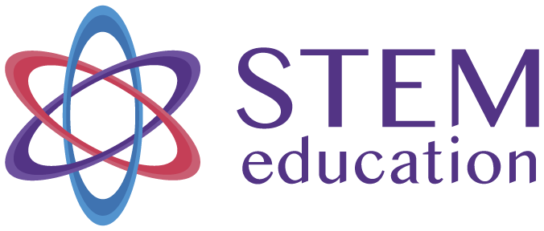

Trei variante de design
Același conținut, aceleași prețuri, trei feluri de a-l prezenta. Deschide-le pe rând, pe calculator și pe telefon.
- 1
Placa
Site-ul ca o placă electronică: șină cu LED-uri care se aprind la derulare, cipuri cu pini, butoane-switch.
Deschide varianta → - 2
Clasic
Varianta curată și liniștită, cu carduri simple, butoane obișnuite și totul pe înțelesul oricui.
Deschide varianta → - 3
Animat
Placa se asamblează singură, ziua trece cu un ceas la derulare, prețurile numără, banda cu cursuri se mișcă. Cel mai bine pe calculator.
Deschide varianta →